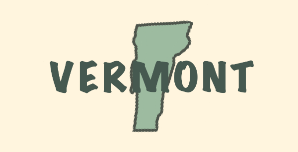

← Back to Itinerary
·
Week 48 — New Hampshire →

Featured Book
A Wealth of Deception
Scandal Mountain Antiques Mystery, Book 2
by Trish Esden
Find it here →
Also Set in Vermont
Frost Degree Murder
Ice Cream Truck Mysteries
by Virginia K. Bennett ·
Find it here →
A Doomful of Sugar
Maple Syrup Mysteries, Book 1
by Catherine Bruns ·
Find it here →
Whispers in the Winter Frost
Mystic Moonhaven Mysteries, Book 1
by Daisy Landish ·
Find it here →
Maple Sugar and Magic
Hemlock Hollow, Book 1
by Tara Lush ·
Find it here →
Murder at The Campground
A Tarot and Vintage Caravan Cozy Mystery Series
by ileana Muñoz Renfroe ·
Find it here →
The Well-Kept Secret
The Wishville Mysteries, Book 1
by Kari Lee Townsend ·
Find it here →